모건 빌더
베타 테스터 가이드
Morgan Edition CMS — 2026.02
모건 빌더란?
모건 빌더는 비개발자도 코딩 없이 사용 가능한 자캐 커뮤니티 전용 웹사이트 빌더입니다.
캐릭터 등록/승인, 역극(RP), 상점/인벤토리, 업적, 인장(시그니처 카드), 개척, 파견 등 자캐 커뮤니티에서 필요한 시스템이 기본 내장되어 있으며, 관리자 설정만으로 바로 운영을 시작할 수 있습니다.
디스코드 스타일의 다크 테마를 기본으로 제공하며, 사이드바 네비게이션과 SPA 방식의 페이지 이동으로 쾌적한 사용 경험을 제공합니다.
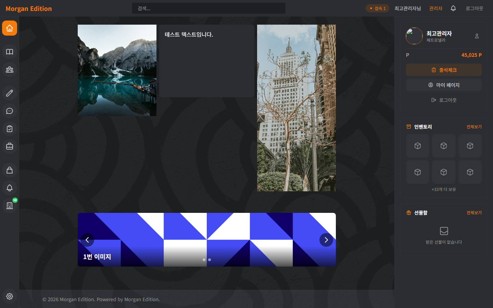
메인 페이지 — 위젯 기반 드래그앤드롭 레이아웃
기본 시스템
캐릭터 시스템
1계정 다캐릭터를 지원합니다. 관리자가 프로필 양식을 자유롭게 커스터마이징할 수 있으며, 캐릭터 등록 후 승인/반려 플로우를 거칩니다. 소속(진영, 종족 등)과 유형(클래스, 직업 등)을 관리자가 정의합니다.
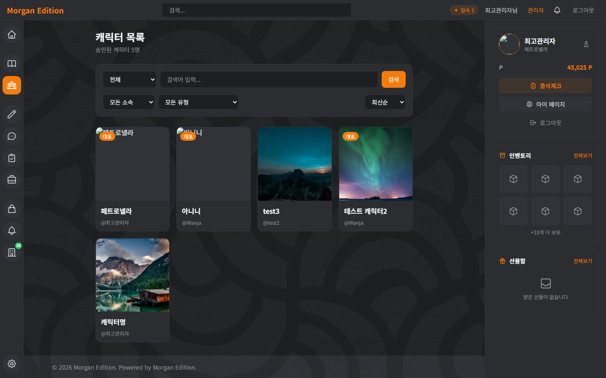
캐릭터 목록 — 프로필 카드 뷰
튜토리얼: 캐릭터 승인 플로우
회원이 캐릭터를 등록하면 관리자가 검토 후 승인/반려합니다.
1
관리자 → 회원/캐릭터 → 캐릭터 관리로 이동합니다. 상단 카드에서 승인 대기 수를 확인하고, 상태 필터를 사용하여 대기 중인 캐릭터를 조회합니다.
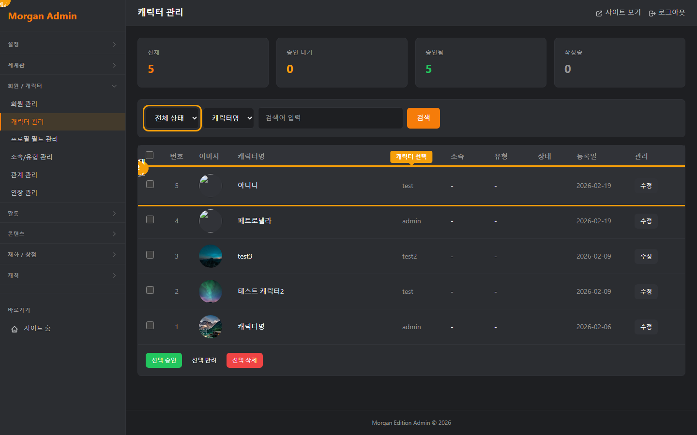
관리자 캐릭터 목록 — 주황 테두리: 상태 필터 / 캐릭터 선택 영역
2
수정 버튼을 클릭하여 캐릭터 상세 페이지로 이동합니다. 프로필 내용을 검토한 뒤, 상태 드롭다운에서 승인 또는 반려를 선택하고 저장합니다.
캐릭터 상세 폼 — 주황 테두리: 상태 변경 / 저장 영역
3
승인 시 해당 회원에게 자동 알림이 발송됩니다. 반려 시 사유를 입력하면 알림에 포함됩니다. 하단의 선택 승인/선택 반려 버튼으로 일괄 처리도 가능합니다.
게시판
기본형, 갤러리형, 방명록형, 포스트잇형, 미션 전용, 의뢰 수행 전용 등 6종의 스킨을 제공합니다. 게시판별로 보상, 주사위, 이모티콘 사용 여부를 개별 설정할 수 있습니다.
세계관 위키
문서/섹션 구조로 세계관 정보를 관리합니다. 상호 링크, 타임라인 연표, 세계관 맵을 지원합니다.
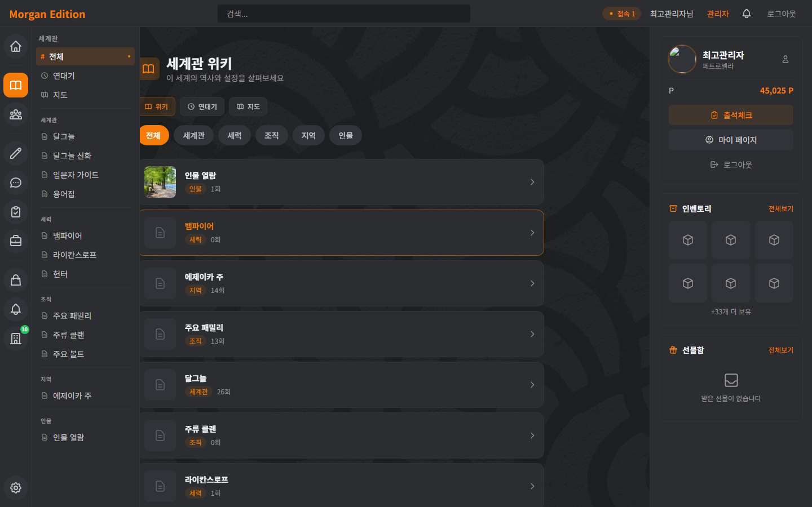
세계관 위키 — 문서 목록 (리스트형)
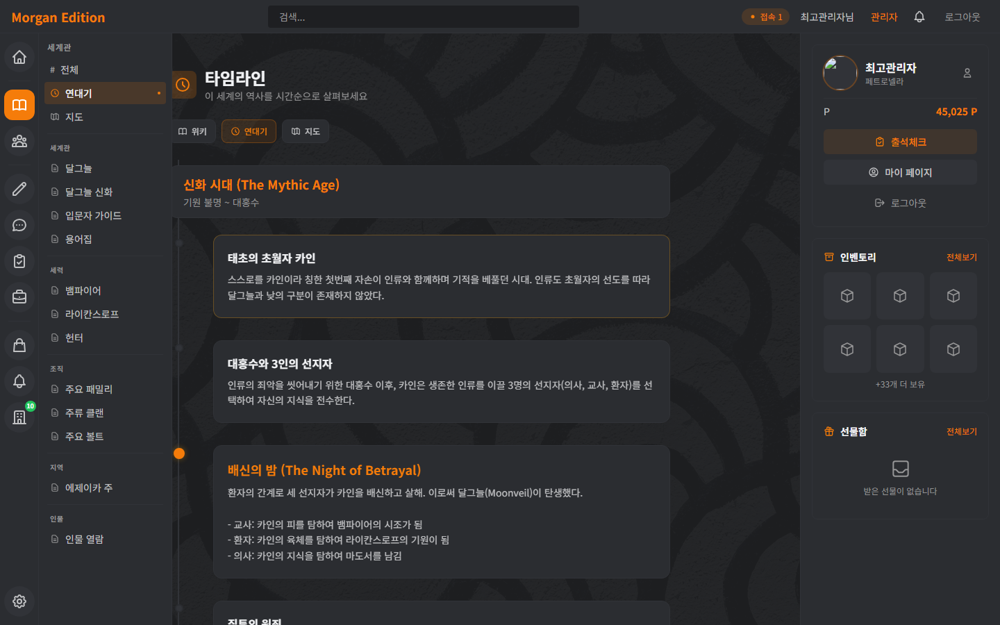
타임라인 연표 — 시대(Era)별 이벤트 시각화
활동 / 보상 시스템
모건 빌더의 핵심 경제 시스템입니다. 거의 모든 콘텐츠가 이 보상 시스템을 통해 연결되며, 포인트와 재료의 흐름이 커뮤니티 활동의 동기를 부여합니다.
포인트/재료 흐름도
게시글 작성 → 포인트 + 재료 자동 지급
역극(RP) 완결 → 참여자 전원 포인트/재료 지급
출석 체크 → 기본 포인트 + 미니게임 보너스
미션 완료 → 검수 후 포인트/재료 지급
좋아요 수신 → 수신자에게 포인트 지급
댓글 주사위 → 주사위 결과에 따라 보너스 포인트
파견 완료 → 확률 기반 재료/아이템 드롭
포인트 소비 → 상점 구매 (닉색, 이모티콘, 인장 꾸미기, 프로필 스킨 등)
재료 소비 → 개척 시설 건설, 특수 아이템 제작
업적 트리거 → 조건 달성 시 자동 뱃지 부여 (포인트 누적, 글 수, 출석 연속 등)
출석체크 + 미니게임
일일 출석체크와 미니게임(얏지 주사위, 운세, 뽑기)을 제공합니다. 연속 출석 보너스를 관리자가 설정할 수 있으며, 미니게임의 보상 범위도 조절 가능합니다.
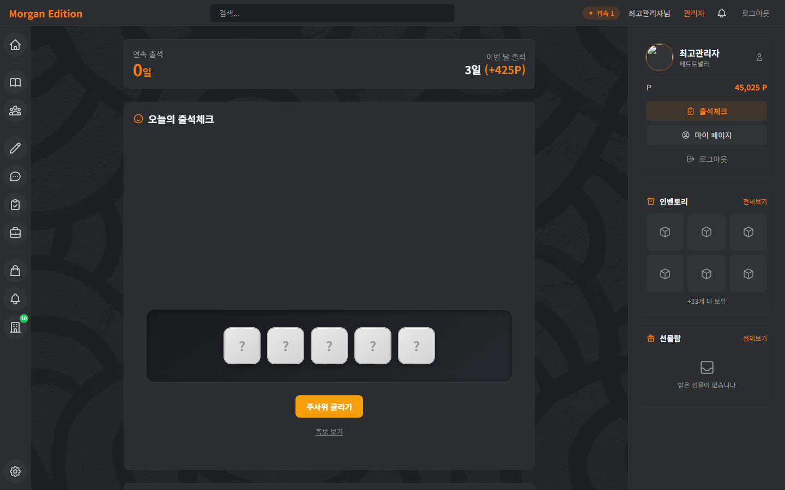
출석체크 페이지 — 주사위 미니게임 + 출석 캘린더
| 설정 항목 | 설명 | 위치 |
|---|
| 출석 보상 포인트 | 기본 출석 시 지급 포인트 | 관리자 → 설정 |
| 연속 출석 보너스 | N일 연속 시 추가 포인트 | 관리자 → 설정 |
| 미니게임 보상 범위 | 주사위 결과별 보상 배율 | 관리자 → 설정 |
보상 시스템 (게시판별)
각 게시판마다 보상 모드를 개별 설정합니다. 자동 지급과 수동(요청) 지급을 선택할 수 있고, 포인트/재료/일일제한/좋아요 연동을 게시판별로 다르게 구성합니다.
| 보상 모드 | 동작 | 적합한 게시판 |
|---|
| 자동 | 글 작성 시 즉시 포인트 지급 | 자유 게시판, 방명록 |
| 수동(요청) | 작성 후 "보상 요청" → 관리자 검수 → 지급 | 미션, RP, 갤러리 |
| 댓글 주사위 | 댓글 시 주사위 결과에 따른 보상 | 이벤트, 모집 게시판 |
튜토리얼: 보상 설정 플로우
보상 관리 페이지에서 게시판별 보상, 활동 보상, 역극 보상, 좋아요 보상, 정산을 관리합니다.
1
관리자 → 활동 → 보상 관리로 이동합니다. 상단 탭에서 게시판별 보상 / 활동 보상 설정 / 역극 보상 / 좋아요 보상 / 정산 대기열을 선택합니다.
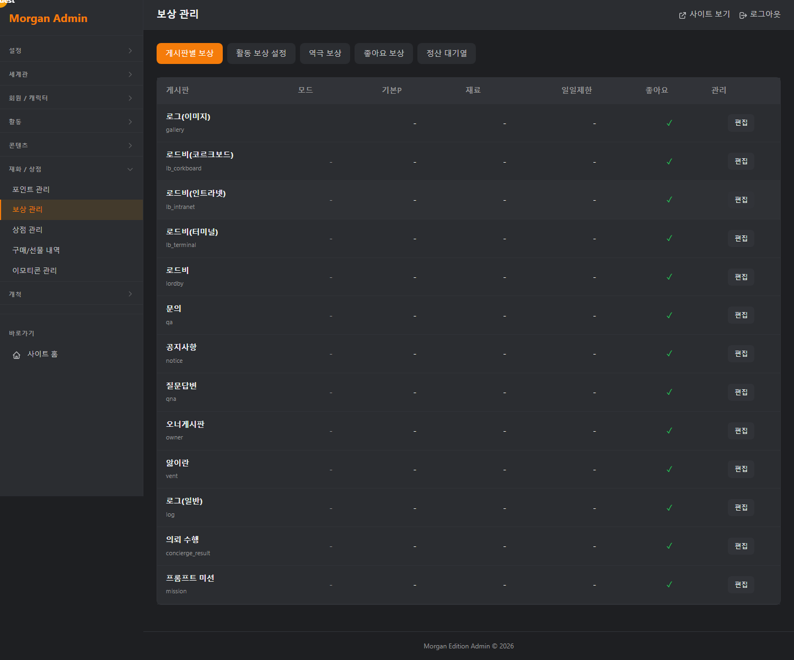
보상 관리 — 게시판별 보상 탭 (모드, 기본P, 재료, 일일제한, 좋아요 설정)
2
각 게시판 행의 편집 버튼을 클릭하여 해당 게시판의 보상을 설정합니다. 보상 모드(자동/수동), 기본 포인트, 재료 드롭 확률, 일일 보상 제한 횟수, 좋아요 연동 여부를 설정합니다.
3
활동 보상 설정 탭에서는 RP 완결 보상, 좋아요 수신 보상, 댓글 작성 보상 등 게시판 외적인 활동의 보상을 설정합니다.
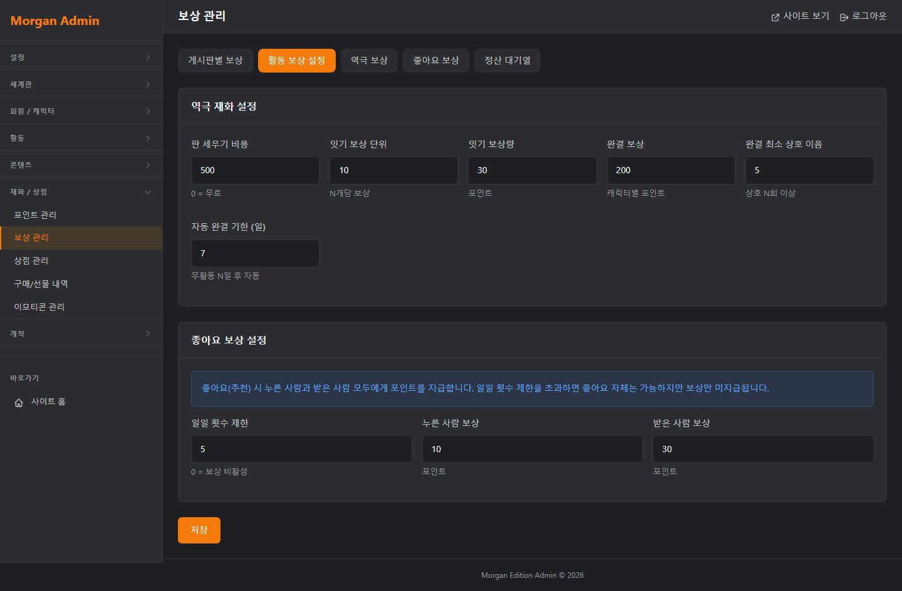
활동 보상 설정 탭
4
정산 대기열 탭에서는 수동 모드 게시판의 보상 요청을 일괄 승인/반려할 수 있습니다.
업적 시스템
조건 달성 시 자동 부여되는 업적 시스템입니다. 5단계 희귀도(일반/비범/희귀/전설/에픽)를 지원하며, 달성한 업적은 프로필과 인장에 쇼케이스로 전시할 수 있습니다.
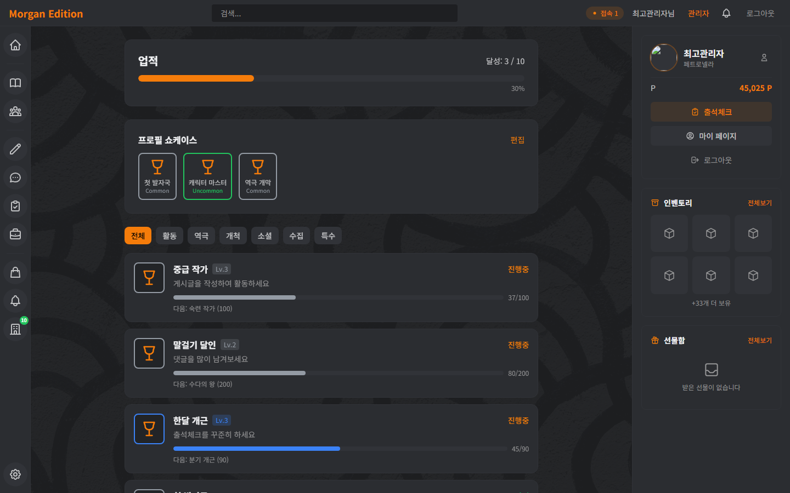
업적 페이지 — 달성 현황 + 희귀도별 분류
| 트리거 유형 | 예시 | 자동/수동 |
|---|
| 글 수 기반 | 게시글 10/50/100회 작성 | 자동 |
| 출석 기반 | 30일 연속 출석 | 자동 |
| 포인트 누적 | 총 포인트 10,000 달성 | 자동 |
| RP 완결 | 역극 5회 완결 | 자동 |
| 관리자 수여 | 이벤트 우승, 특별 공헌 | 수동 |
댓글 주사위
서버사이드 랜덤으로 댓글 작성 시 주사위를 굴립니다. 모집이나 이벤트 판정에 사용하며, 게시판별 ON/OFF가 가능합니다.
관리자 → 보상 관리 → 해당 게시판 편집에서 "주사위 사용"을 활성화합니다. 주사위 최대값, 1회 제한 여부도 설정 가능합니다.
인장 (시그니처 카드)
유저 명함 기능입니다. 16×4 격자에 캐릭터 이미지, 닉네임, 한마디, 텍스트, 트로피를 자유롭게 배치합니다. 상점에서 구매한 아이템으로 배경색, 배경 이펙트, 테두리, 호버 효과를 꾸밀 수 있습니다. 게시글과 역극 하단에 자동 표시됩니다.
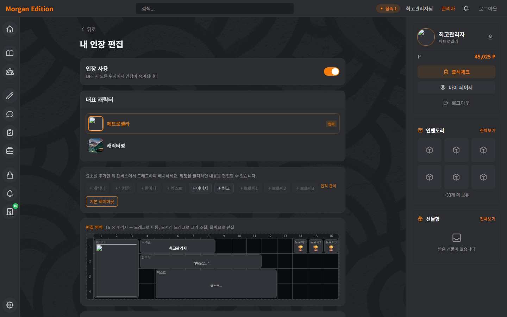
인장 편집기 — GridStack 기반 드래그앤드롭 + 실시간 미리보기
알림 시스템
벨 아이콘 + 토스트 팝업으로 홈페이지 내 대부분의 행동(캐릭터 승인, 좋아요, 댓글, RP 이음, 보상 지급, 업적 달성 등)을 실시간으로 알려줍니다.
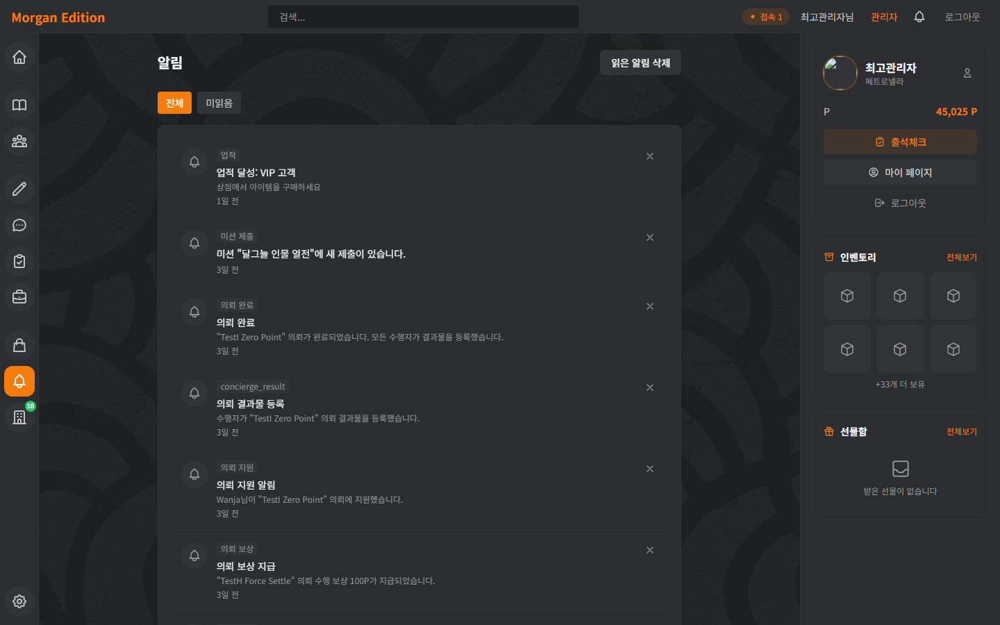
알림 목록
커뮤니티 콘텐츠
역극(RP) 시스템
판 세우기 → 이음(답글) → 완결 플로우를 지원합니다. 캐릭터를 연결하여 상호 역극을 진행하며, 완결 시 참여자 전원에게 보상이 지급됩니다. 이모티콘 삽입과 캐릭터 선택을 지원합니다.
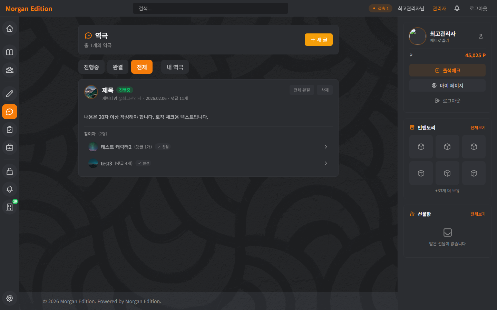
역극 페이지 — 판 목록과 이음
상점 / 인벤토리
포인트로 구매 가능한 아이템: 닉네임 색상/효과, 프로필/인장 꾸미기, 이모티콘 셋, 칭호, 선물 등. 관리자가 카테고리와 아이템을 자유롭게 추가합니다.
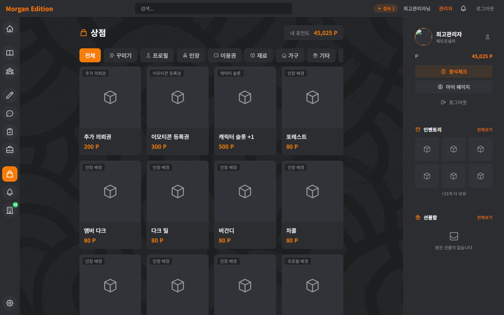
상점 — 카테고리별 상품 목록
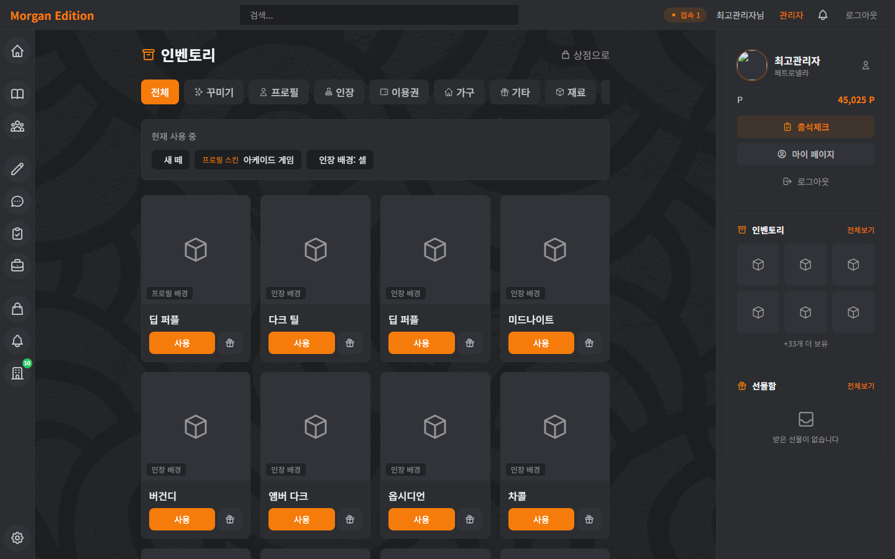
인벤토리 — 보유 아이템 + 사용/선물
개척 시스템
유저가 공동으로 자원(스태미나/재료)을 투입하여 커뮤니티 시설을 건설합니다. 기여 랭킹과 명예의 전당을 제공합니다.
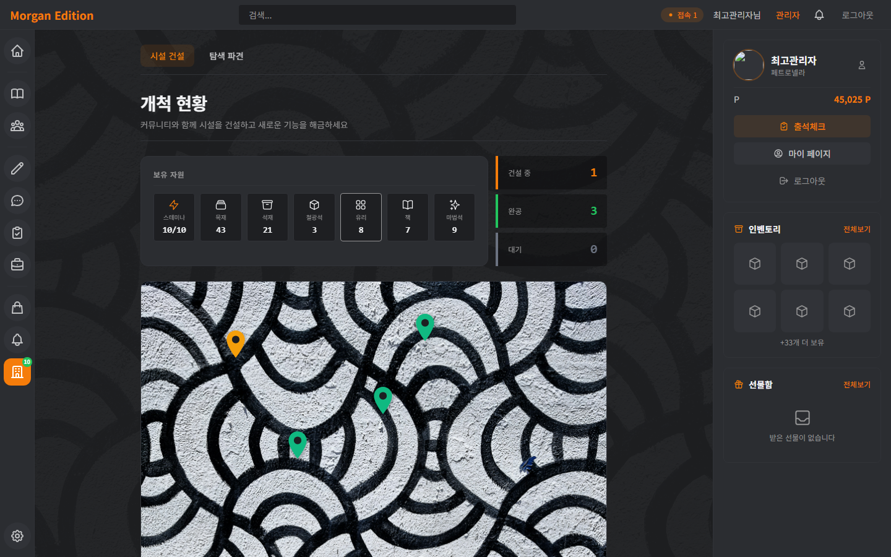
개척 현황 — 거점 맵 뷰
탐색 파견
스태미나를 소모하여 파견지에 캐릭터를 보내면 확률 보상을 획득합니다. 관계가 맺어진 캐릭터 중 파트너를 선택하면 보너스가 적용되며, 세계관 맵과 연동됩니다.
탐색 파견 — 파견지 맵
튜토리얼: 파견지 세팅 플로우
관리자가 파견지를 생성하고, 드롭 아이템과 이벤트를 설정합니다.
1
관리자 → 개척 → 파견지 관리로 이동합니다. 상단에서 파견 맵 이미지를 설정하고, 하단 목록에서 기존 파견지를 확인합니다.
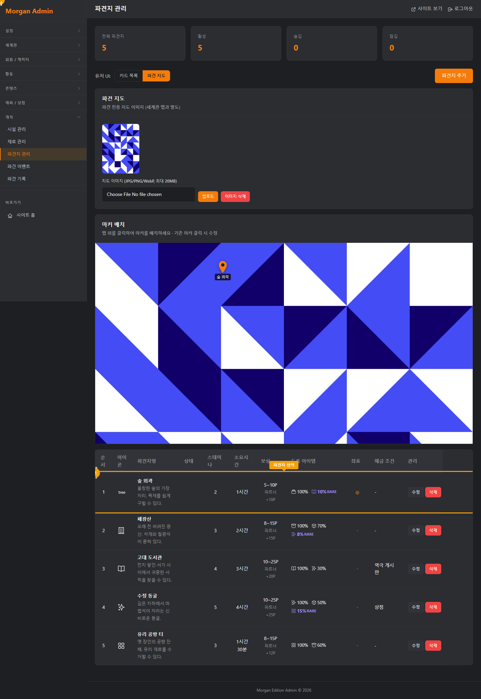
파견지 관리 — 맵 이미지 + 파견지 목록 (드롭 아이템/시간/비용 설정)
2
수정 버튼을 클릭하여 파견지 상세를 설정합니다. 파견지 이름, 설명, 소요 시간, 스태미나 비용, 드롭 테이블(아이템별 확률/수량)을 입력합니다.
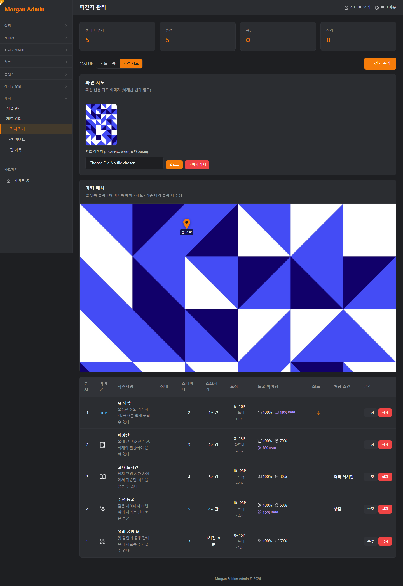
파견지 상세 설정 폼 — 기본 정보 + 드롭 테이블
3
파견 이벤트 메뉴에서 기간 한정 이벤트를 등록합니다. 이벤트 기간 중 특정 파견지의 드롭률 상승이나 특별 보상을 설정할 수 있습니다.
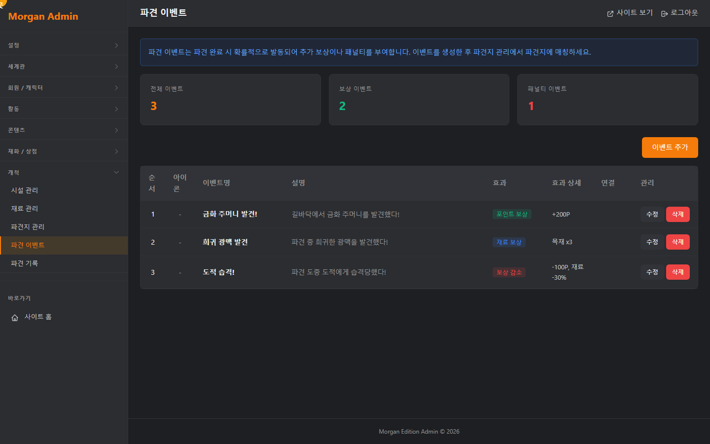
파견 이벤트 관리
기타 콘텐츠
- 이모티콘 시스템 — 셋 관리, 구매, 댓글/게시글/역극 삽입. 유저 직접 제작 및 판매 가능.
- 캐릭터 관계 — 신청/승인 방식 관계 맺기. vis.js 기반 관계도 시각화.
- 의뢰 매칭 — 의뢰 등록, 지원/추첨, 전용 게시판 결과물 제출.
- 미션 — 주간/월간 미션 출제, 자동 보상 또는 검수 모드.
- 마이페이지 — 보유 캐릭터, 활동 이력, 인장, 업적을 한 곳에서 관리.
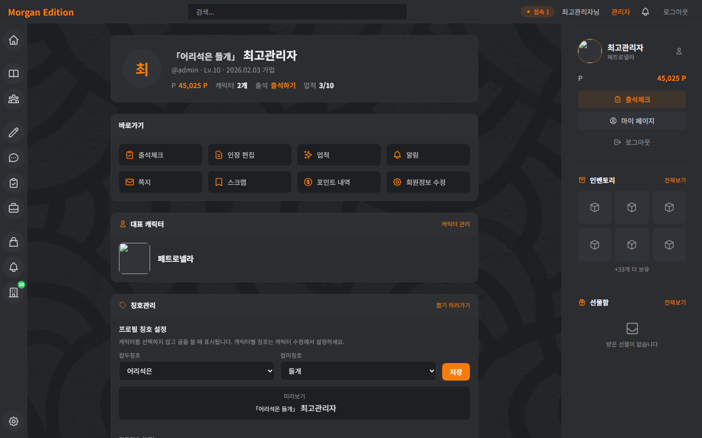
마이페이지
관리자 설정 개요
모건 빌더의 관리자 페이지에서 대부분의 설정을 코딩 없이 변경할 수 있습니다.
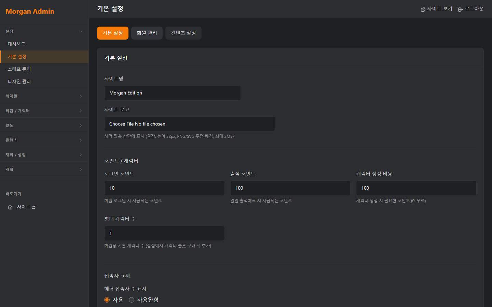
관리자 설정 — 시스템 전반 설정
| 메뉴 | 기능 |
|---|
| 설정 | 사이트명, 포인트 단위, 출석 보상, 인장/관계 활성화, 주사위 설정 |
| 게시판 관리 | 게시판 추가/수정, 스킨 선택, 보상/주사위 개별 설정 |
| 캐릭터 관리 | 승인/반려, 프로필 필드 커스텀, 소속/유형 관리 |
| 보상 관리 | 게시판별/활동별 보상, 정산 대기열 |
| 상점 관리 | 카테고리/아이템 추가, 가격/효과 설정 |
| 파견지 관리 | 파견지 추가, 드롭 테이블, 이벤트 |
| 세계관 관리 | 위키 문서, 타임라인, 맵 |
| 업적 관리 | 업적 추가, 트리거 조건, 희귀도 |
| 이모티콘 관리 | 이모티콘 셋 추가/승인 |
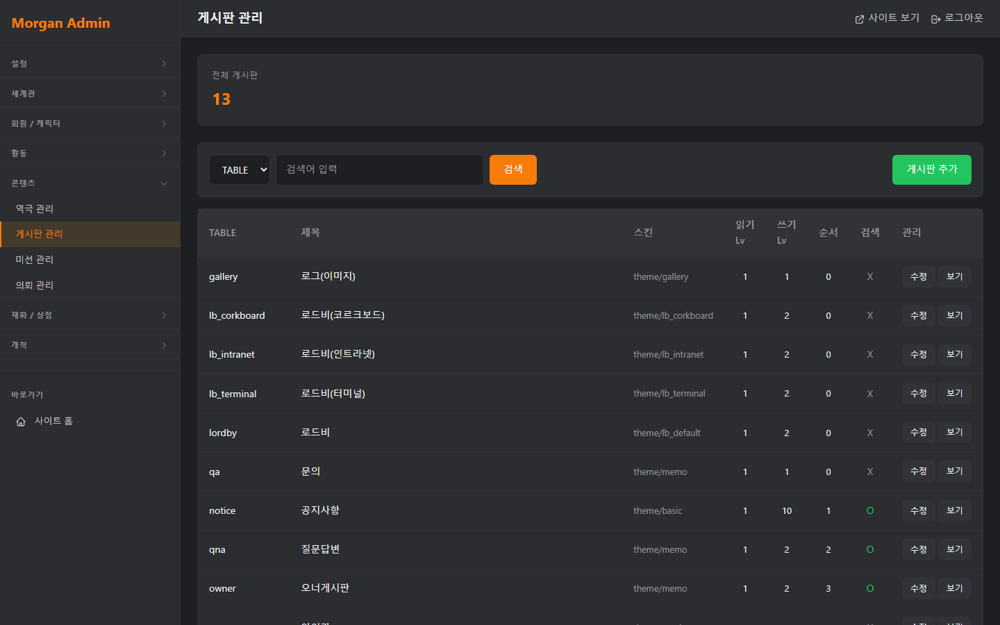
게시판 관리 목록
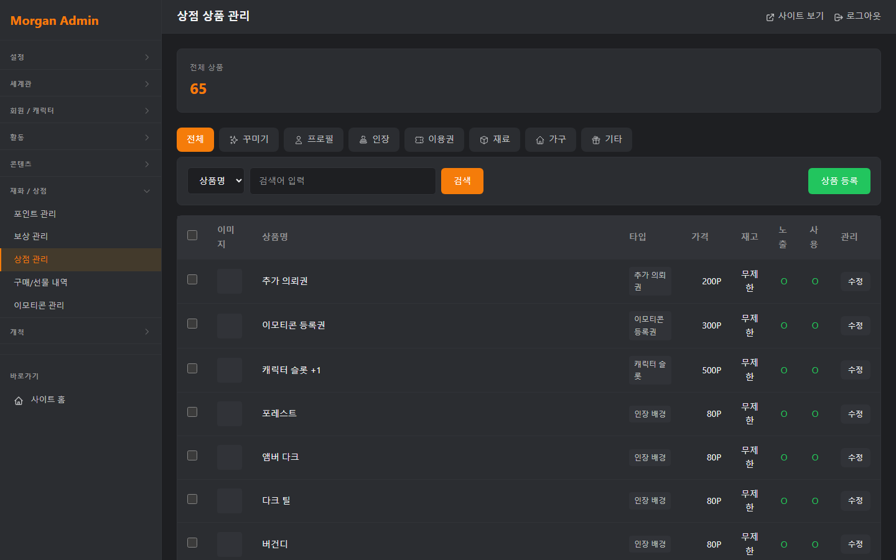
상점 아이템 관리
준비 중인 콘텐츠
핵심 시스템이 1차 완성되어 있으며, 베타 테스트를 진행하며 안정화 후 아래 콘텐츠가 추가됩니다. 개발 우선순위는 테스터 피드백이 반영됩니다.
| 콘텐츠 | 설명 |
|---|
| 실시간 채팅 | 캐입/유저 이입 구분, supabase 연동 |
| 공동 연구 트리 | 재화 공동 투입으로 커뮤니티 영구 버프 해금 |
| 마이룸 | 아이소메트릭 뷰 개인 공간, 가구/테마 배치 |
| 비주얼 노벨 엔진 | 역극 내용을 VN 형식으로 컨버팅/플레이 |
| 세미 턴제 RPG | 스탯/장비/스킬, 던전 탐사, 다이스 전투 |
| SRPG | 타일 기반 맵 파티 Co-op PvE |
| 진영 대립 | 진영 게시판, 카드 배틀, 시즌제 점령전 |
기술 환경
- PHP 8 / MySQL 8 / Nginx
- Tailwind CSS v4 (다크 테마 기본)
- Gnuboard5 기반 자체 확장 CMS
- Docker 컨테이너 (개발) / Cafe24 호스팅 (운영)
예시 사이트
moonveil.org
admin / test1234 (관리자) test / test1234 (회원)
주의
모든 계정정보가 공개되어 있으므로 유실되면 안 되는 개인 데이터의 입력은 지양해주세요. 수시로 변경/초기화될 수 있습니다.